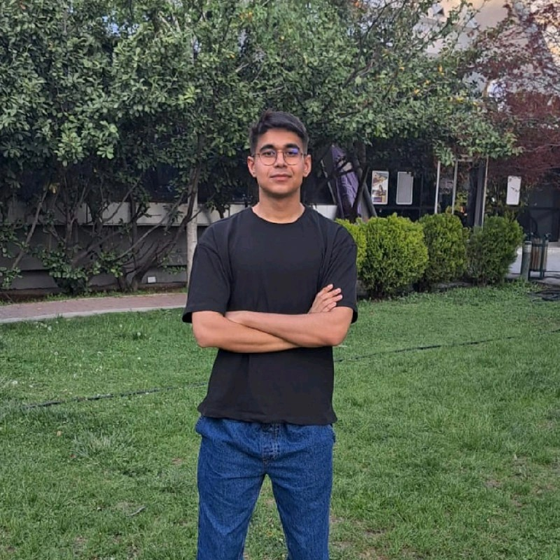

> Efekan Çelik
Yazılım Mühendisliği Öğrencisi // Ankara Üniversitesi
Merhaba, ben Efekan. Ankara Üniversitesi Yazılım Mühendisliği öğrencisiyim. Benimle ilgili daha fazla bilgi edinmek için CV'mi inceleyebilirsiniz.
01. Hakkımda
Merhaba, ben Efekan Çelik. Ankara Üniversitesi Yazılım Mühendisliği bölümü 3. sınıf öğrencisiyim. Küçük yaşlardan itibaren kurduğum bilgisayar mühendisi olma hayalimi gerçeğe dönüştürmek için çalışıyorum. İyi bir yazılımcı olma yolunda çeşitli projelerde yer alıyor, eğitimler ve seminerlerle kendimi sürekli geliştiriyorum.
Şu an özellikle yapay zeka ve veri bilimi alanlarına odaklanırken, aynı zamanda kullanıcı dostu web siteleri geliştirerek bu alandaki yetkinliğimi artırıyorum.
02. Deneyim
> GreyCollar (Uzaktan)
- Uygulama performansını ve logları anlık takip edebilmek için ELK Stack (Elasticsearch, Kibana) ve Grafana tabanlı uçtan uca izleme sistemini deneyimledim.
- Açık kaynaklı n8n platformunu kullanarak, Google Drive ve GreyCollar API'si arasında veri akışını sağlayan entegre bir otomasyon senaryosu (PoC) geliştirdim.
- İstemci ve sunucu arasında, verilerin anlık ve düşük gecikmeyle aktarılmasını sağlayan event-driven (olay güdümlü) sistem mimarileri üzerinde çalışma deneyimi kazandım.
> HSD Ankara Üniversitesi
- Topluluk teknik süreç yönetimi ve etkinlik organizasyonları.
> DivvyDrive (Uzaktan)
- HTML5, CSS3 ve JS ile arayüz geliştirme süreçleri.
03. Eğitim
Ankara Üniversitesi
Yazılım Mühendisliği | 2023 — Devam
GANO: 3.24 / 4.00
04. Projeler
Makine Öğrenmesi ile Ağ Saldırı Tespiti (ML-IDS)
- Ağ trafiği üzerinden anomali ve siber saldırı tespit eden yapay zeka modeli geliştiriildi.
- CICIDS2017 vb. veri setleri üzerinde XGBoost, Random Forest ve CNN-LSTM modelleri eğitildi.
TEKNOFEST 2025 — 5G Konumlandırma Yarışması
- “5Gordion” takımıyla 5G Konumlandırma Yarışması’nda Türkiye 3.’sü olduk.
- Yarışma kapsamında 5G sinyalleriyle hassas konum tahmini yapan hibrit bir model geliştirldi.
- Veri işleme, model testleri ve proje dokümantasyon süreçlerinde aktif rol aldım.
becayisbul.com
- KYK yurtları için becayiş (yer değiştirme) eşleştirmesi yapan platformda frontend geliştirdim.
- React ile modern arayüzler tasarladım.
- Uygulamanın MVP sürümü tamamlandı. Becayiş sistemi GSB tarafından kaldırıldığı için geliştirme sürecine son verildi.
TÜBİTAK 2209-A Araştırma Projesi (KurbanLink)
- Kurban alım-satımı, mesajlaşma ve kasap randevu özellikleri sunan marketplace geliştirdim.
- Django REST Framework ile JWT Auth, rol yetkilendirmesi ve öneri motoru entegre ettim.
- Projeyi AWS Lightsail'da Nginx + Gunicorn ile canlıya aldım ve CI/CD süreçlerini kurdum.
05. Yetenekler
Programlama Dilleri
Yapay Zekâ & Veri Bilimi
Web & Backend
Araçlar & DevOps
Diller
- Türkçe (Anadil)
- İngilizce
B2 Seviye (YÖKDİL: 77.5)